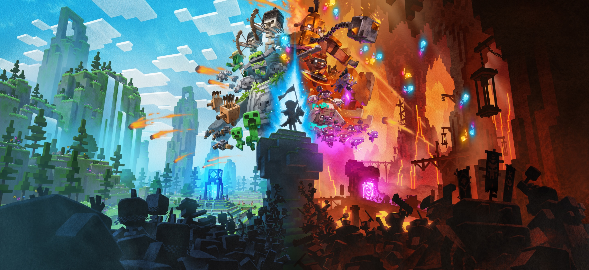
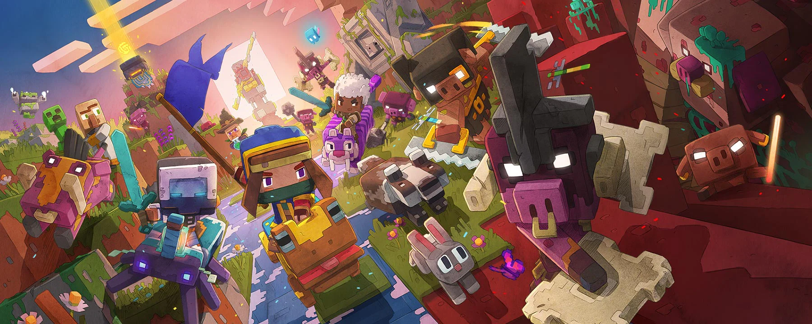

Minecraft Legends
Minecraft Legends es un juego de estrategia y acción ambientado en el universo de Minecraft, en el que los jugadores deben defender el Overworld de la invasión de los Piglins del Nether. En este título, los jugadores lideran ejércitos de criaturas como golems, creepers y aldeanos, construyen bases, gestionan recursos y crean defensas estratégicas para proteger sus territorios. Con opciones de juego multijugador en modos cooperativo y competitivo, Minecraft Legends combina la creatividad y la planificación en un estilo visual de bloques que los fans de Minecraft reconocen y aman. |
 |
|  | En Minecraft Legends, los jugadores se sumergen en una aventura de estrategia en tiempo real, donde su misión es salvar el Overworld de la amenaza de los Piglins. Liderando un ejército de criaturas aliadas, los jugadores deben construir defensas, recolectar recursos y planificar ataques para frenar las invasiones. Minecraft Legends ofrece modos de juego cooperativo y competitivo, lo que permite a los jugadores unir fuerzas o enfrentarse entre sí en épicas batallas estratégicas, todo en el estilo de bloques que caracteriza al universo de Minecraft. |